Chapter 3: Exploring Your Data with Tables and Visuals
“If you can’t explain it simply, you don’t understand it well enough.” — Albert Einstein
We are going to take what we’ve learned from the previous two chapters and use them together to have simple but powerful ways to understand your data. This chapter will be split into two sections:
- Descriptive Statistics
- Visualizations
The two go hand-in-hand in understanding what is happening in your data before you attempt any modeling procedures. We are often most interested in three things when exploring our data: understanding distributions, understanding relationships, and looking for outliers or errors.
Descriptive Statistics
Several methods of discovering descriptives in a succinct way have been developed for R. My favorite (full disclosure: it is one that I made so I may be biased) is the table1 function in the furniture package.
This function has been designed to be simple and complete. It produces a well-formatted table that you can easily export and use as a table in a report or article.1 We’ll use the df object we created in Chapter 2.
Let’s get descriptive statistics for five of the variables: asthma, race, depression, family size, and sedentary behavior.
#library(furniture)
df %>%
table1(asthma, race, dep, famsize, sed)##
## ──────────────────────────────────────
## Mean/Count (SD/%)
## n = 4437
## asthma
## No Asthma 3774 (85.1%)
## Asthma 663 (14.9%)
## race
## MexicanAmerican 392 (8.8%)
## OtherHispanic 442 (10%)
## White 1733 (39.1%)
## Black 1161 (26.2%)
## Other 709 (16%)
## dep
## 3.2 (4.5)
## famsize
## 2.7 (1.5)
## sed
## 369.3 (201.2)
## ──────────────────────────────────────This quickly gives you means and standard deviations or counts and percentages.
The code below shows the means/standard devaitions or counts/percentages by a grouping variable—in this case, asthma.
df %>%
group_by(asthma) %>%
table1(race, dep, famsize, sed)##
## ────────────────────────────────────────────────
## asthma
## No Asthma Asthma
## n = 3774 n = 663
## race
## MexicanAmerican 350 (9.3%) 42 (6.3%)
## OtherHispanic 380 (10.1%) 62 (9.4%)
## White 1453 (38.5%) 280 (42.2%)
## Black 958 (25.4%) 203 (30.6%)
## Other 633 (16.8%) 76 (11.5%)
## dep
## 3.0 (4.3) 4.4 (5.2)
## famsize
## 2.7 (1.5) 2.6 (1.5)
## sed
## 365.2 (201.1) 392.4 (200.0)
## ────────────────────────────────────────────────We can also test for differences by group as well.
df %>%
group_by(asthma) %>%
table1(race, dep, famsize, sed,
test = TRUE)##
## ────────────────────────────────────────────────────────
## asthma
## No Asthma Asthma P-Value
## n = 3774 n = 663
## race <.001
## MexicanAmerican 350 (9.3%) 42 (6.3%)
## OtherHispanic 380 (10.1%) 62 (9.4%)
## White 1453 (38.5%) 280 (42.2%)
## Black 958 (25.4%) 203 (30.6%)
## Other 633 (16.8%) 76 (11.5%)
## dep <.001
## 3.0 (4.3) 4.4 (5.2)
## famsize 0.496
## 2.7 (1.5) 2.6 (1.5)
## sed 0.001
## 365.2 (201.1) 392.4 (200.0)
## ────────────────────────────────────────────────────────Several other options exist for you to play around with, including obtaining medians and ranges and removing a lot of the white space of the table.
With three or four short lines of code we can get a good idea about variables that may be related to the grouping variable and any missingness in the factor variables. There’s much more you can do with table1 and there are vignettes and tutorials available to learn more.2
Other quick descriptive functions exist; here are a few of them.
## install with install.packages("psych")
psych::describe(df) ## install with install.packages("Hmisc")
Hmisc::describe(df) ## install with install.packages("janitor")
janitor::tabyl(df)There is truly no shortage of descriptive information that you can obtain within R.
Visualizations
Understanding your data, in my experience, almost always requires visualizations3. If we are going to use a model of some sort, understanding the distributions and relationships beforehand are very helpful in interpreting the model and catching errors in the data. Also finding any outliers or errors that could be highly influencing the modeling should be understood beforehand.
For simple but appealing visualizations we are going to be using ggplot2. This package is used to produce professional level plots for many journalism organizations (e.g. five-thrity-eight). These plots are quickly presentation quality and can be used to impress your boss, your advisor, or your friends.
Using ggplot2
This package is included in the tidyverse and is built on the “Grammar of Graphics” principles of data visualization. In essence, it is built on adding layers to a plot. Below, we walk through quick ways to start to visualize our data.
First, we have a nice qplot function that is short for “quick plot.” It quickly decides what kind of plot is useful given the data and variables you provide.
qplot(df$sed) ## Makes a simple histogram## `stat_bin()` using `bins = 30`. Pick better value with `binwidth`.## Warning: Removed 18 rows containing non-finite values (stat_bin).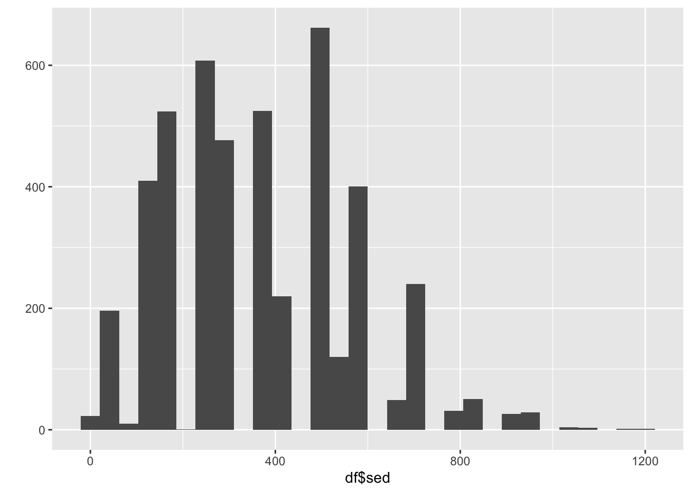
qplot(df$sed, df$dep) ## Makes a scatterplot## Warning: Removed 18 rows containing missing values (geom_point).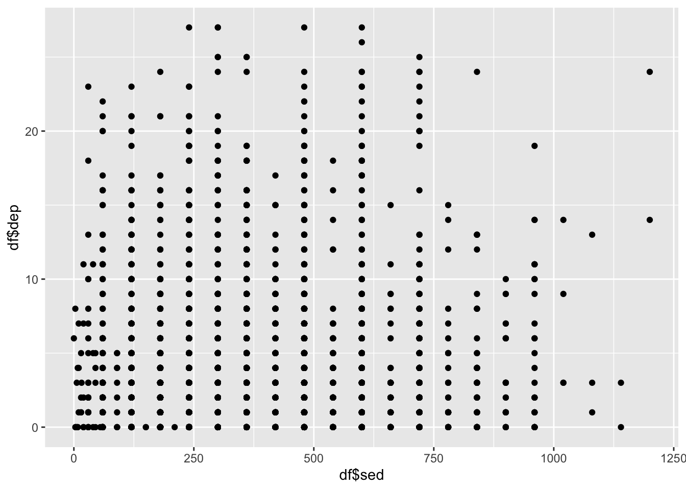
For a bit more control over the plot, you can use the ggplot function. The first piece is the ggplot piece. From there, we add layers. These layers generally start with geom_ then have the type of plot. Below, we start with telling ggplot the basics of the plot and then build a boxplot.
The key pieces of ggplot:
aes()is how we tellggplot()to look at the variables in the data frame.- Within
aes()we told it that the x-axis is the variable “C” and the y-axis is the variable “D” and then we color it by variable “C” as well (which we told specifically to the boxplot). geom_functions are how we tellggplotwhat to plot—in this case, a boxplot.
These same pieces will be found throughout ggplot plotting. In later chapters we will introduce much more in relation to these plots.
ggplot(df, aes(x=sed, y=dep)) +
geom_boxplot(aes(color = sed))## Warning: Continuous x aesthetic -- did you forget aes(group=...)?## Warning: Removed 18 rows containing missing values (stat_boxplot).
Here’s a few more examples:
ggplot(df, aes(x=sed)) +
geom_bar(stat="count")## Warning: Removed 18 rows containing non-finite values (stat_count).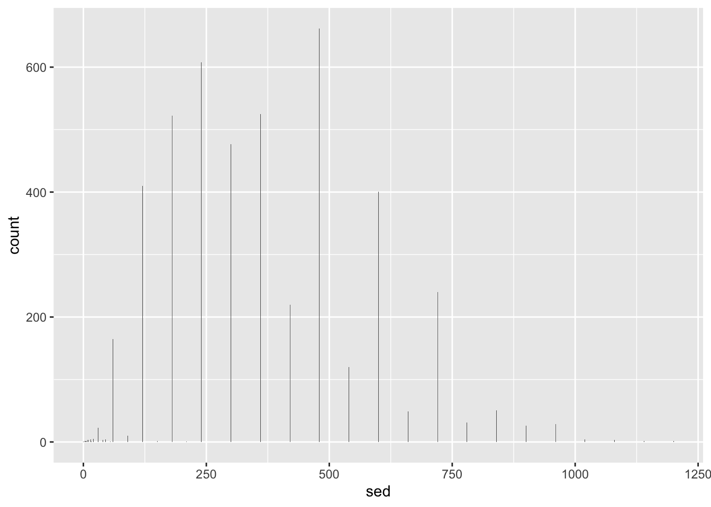
ggplot(df, aes(x=sed, y=dep)) +
geom_point(aes(color = famsize))## Warning: Removed 18 rows containing missing values (geom_point).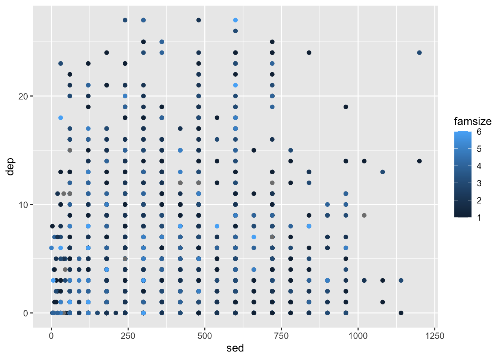
Note that the warning that says it removed a row is because we had missing values in in these variables.
ggplot(df, aes(x=sed,
y=dep,
group = race,
color = race)) +
geom_point() +
geom_smooth(method = "lm")## `geom_smooth()` using formula 'y ~ x'## Warning: Removed 18 rows containing non-finite values (stat_smooth).## Warning: Removed 18 rows containing missing values (geom_point).
We are going to make the first one again but with some aesthetic adjustments. Notice that we just added two extra lines telling ggplot2 how we want some things to look.4
ggplot(df, aes(x=famsize, y=dep, group = famsize)) +
geom_boxplot(aes(color = riagendr)) +
theme_bw() +
scale_color_manual(values = c("dodgerblue4", "coral2"))## Warning: Removed 178 rows containing missing values (stat_boxplot).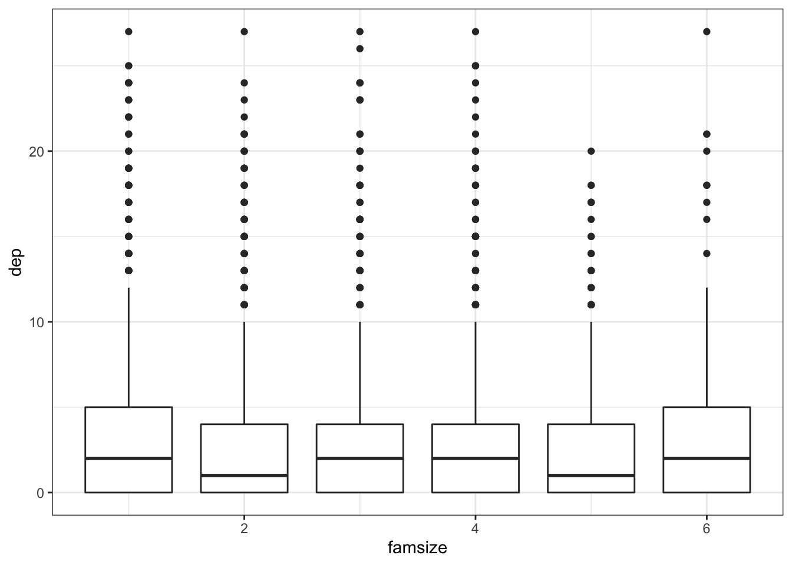
The theme_bw() makes the background white, the scale_color_manual() allows us to change the colors in the plot. You can get a good idea of how many types of plots you can do by going to http://docs.ggplot2.org/current. Almost any informative plot that you need to do as a researcher is possible with ggplot2.
We will be using ggplot2 extensively in the book to help understand our data and our models as well as communicate our results.
More Advanced Features of ggplot2
We will go through several aspects of the code that makes plotting in R flexible and beautiful.
- Types of plots
- Color schemes
- Themes
- Labels and titles
- Facetting
To highlight these features we’ll be using our NHANES data again; specifically, sedentary behavior, depression, asthma, family size, and race. As this is only an introduction, refer to http://docs.ggplot2.org/current/ for more information on ggplot2.
To begin, it needs to be understood that the first line where we actually use the ggplot function, will then apply to all subsequent laters (e.g., geom_point()). For example,
ggplot(df, aes(x = dep, y = sed, group = asthma))means for the rest of the layers, unless we over-ride it, each will use df with dep as the x variable, sed as the y, and a grouping on asthma. So when many layers are going to use the same command put it in this so you don’t have to write the same argument many times. A common one here could be:
ggplot(df, aes(x = dep, y = sed, group = asthma, color = asthma))since we often want to color by our grouping variable.
Before going forward, a nice feature of ggplot2 allows us to use an “incomplete” plot to add on to. For example, if we have a good idea of the main structure of the plot but want to explore some changes, we can do the following:
p1 <- ggplot(df, aes(x = dep, y = sed, group = asthma)) +
geom_point()
p1## Warning: Removed 18 rows containing missing values (geom_point). So now
So now p1 has the information for this basic, and honestly fairly uninformative, plot. We’ll use this feature to build on plots that we like.
Some of our figures will also need summary data so we’ll start that here as well:
summed_data <- df %>%
group_by(asthma, dep2) %>%
summarize(s_se = sd(sed, na.rm=TRUE)/sqrt(n()),
sed = mean(sed, na.rm=TRUE),
N = n())## `summarise()` has grouped output by 'asthma'. You can override using the `.groups` argument.As you hopefully recognize a bit, we are summarizing the time spent being sedentary by both asthma and the dichotomous depression variables. If it doesn’t make sense at first, read it line by line to see what I did. This will be useful for several types of plots.
Types of Plots
Scatterplots
We’ll start with a scatterplot–one of the most simple yet informative plots.
ggplot(df, aes(x = dep, y = sed, group = asthma)) +
geom_point(aes(color = asthma))
It’s not amazing. There looks to be a lot of overlap of the points. Also, it would be nice to know general trend lines for each group. Below, alpha refers to how transparent the points are, method = "lm" refers to how the line should be fit, and se=FALSE tells it not to include error ribbons.
ggplot(df, aes(x = dep, y = sed, group = asthma)) +
geom_jitter(aes(color = asthma), alpha = .5) +
geom_smooth(aes(color = asthma), method = "lm", se=FALSE)
It’s getting better but we could still use some more features. We’ll come back to this in the next sections.
Boxplots
Box plots are great ways to assess the variability in your data. Below, we create a boxplot but change p1’s x variable so that it is the factor version of depression.
ggplot(df, aes(x = factor(dep2), y = sed)) +
geom_boxplot()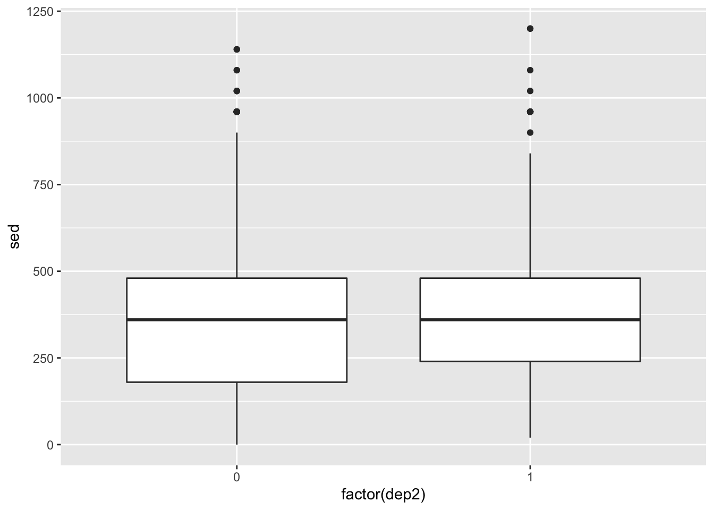
This plot is, at best, mediocre. But there’s more we can do.
ggplot(df, aes(x = factor(dep2), y = jitter(sed, 100))) +
geom_jitter(alpha = .1, color = "chartreuse4") +
geom_boxplot(alpha = .75, color = "dodgerblue4") 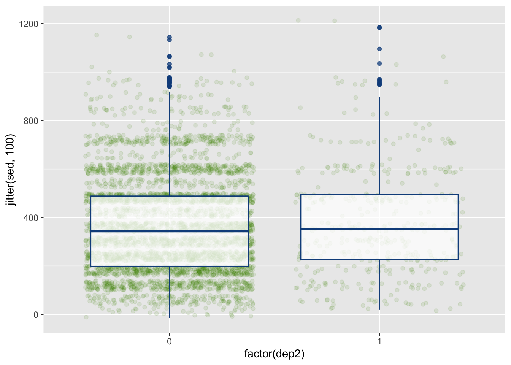
This now provides the (jittered) raw data points as well to hightlight the noise and the number of observations in each group.
Bar Plots
Bar plots are great ways to look at means and standard deviations for groups.
ggplot(summed_data, aes(x = dep2, y = sed, group = asthma)) +
geom_bar(aes(fill = asthma), stat = "identity", position = "dodge")
We used stat = "identity" to make it based on the mean (default is count), and position = "dodge" makes it so the bars are next to each other as opposed to stacked. Let’s also add error bars.
p = position_dodge(width = .9)
ggplot(summed_data, aes(x = dep2, y = sed, group = asthma)) +
geom_bar(aes(fill = asthma),
stat = "identity",
position = p,
alpha = .8) +
geom_errorbar(aes(ymin = sed - s_se, ymax = sed + s_se,
color = asthma),
position = p,
width = .3)
There’s a lot in there but much of it is what you’ve seen before. For example, we use alpha in the geom_bar() to tell it to be slightly transparent so we can see the error bars better. We used the position_dodge() function to specify exactly how much dodge we wanted. In this way, we are able to line up the error bars and the bars. If we just use position = "dodge" we have less flexibility and control.
Much more can be done to clean this up, which we’ll show in later sections.
Line Plots
Line plots are particularly good at showing trends and relationships. Below we we use it to highlight the relationship between depression, sedentary behavior, and asthma.
ggplot(summed_data, aes(x = dep2, y = sed, group = asthma)) +
geom_line(aes(color = asthma))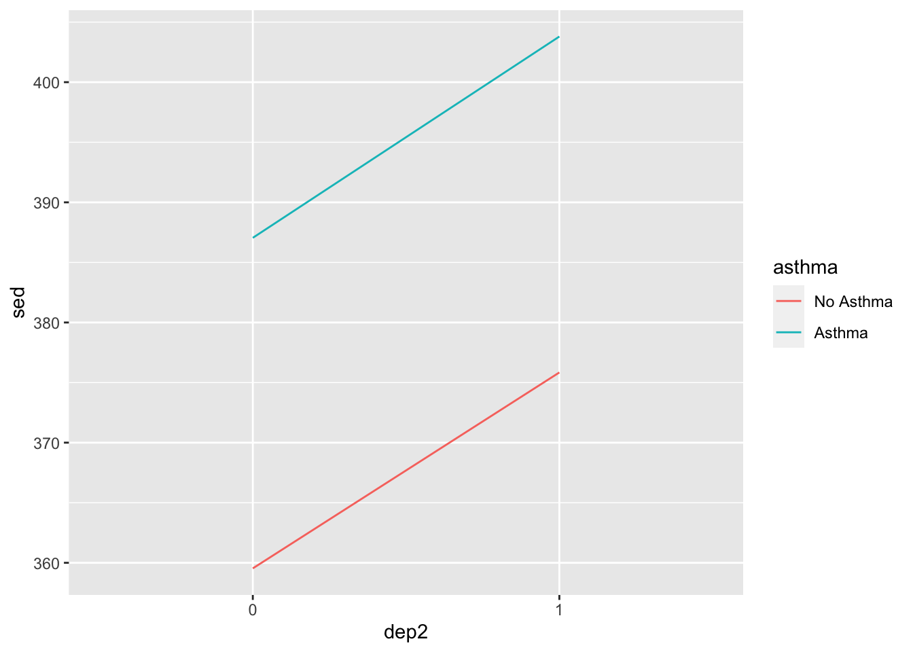
Good start, but let’s add some features.
pos = position_dodge(width = .1)
ggplot(summed_data, aes(x = dep2, y = sed, group = asthma, color = asthma)) +
geom_line(position = pos) +
geom_point(position = pos) +
geom_errorbar(aes(ymin = sed - s_se, ymax = sed + s_se),
width = .1,
position = pos)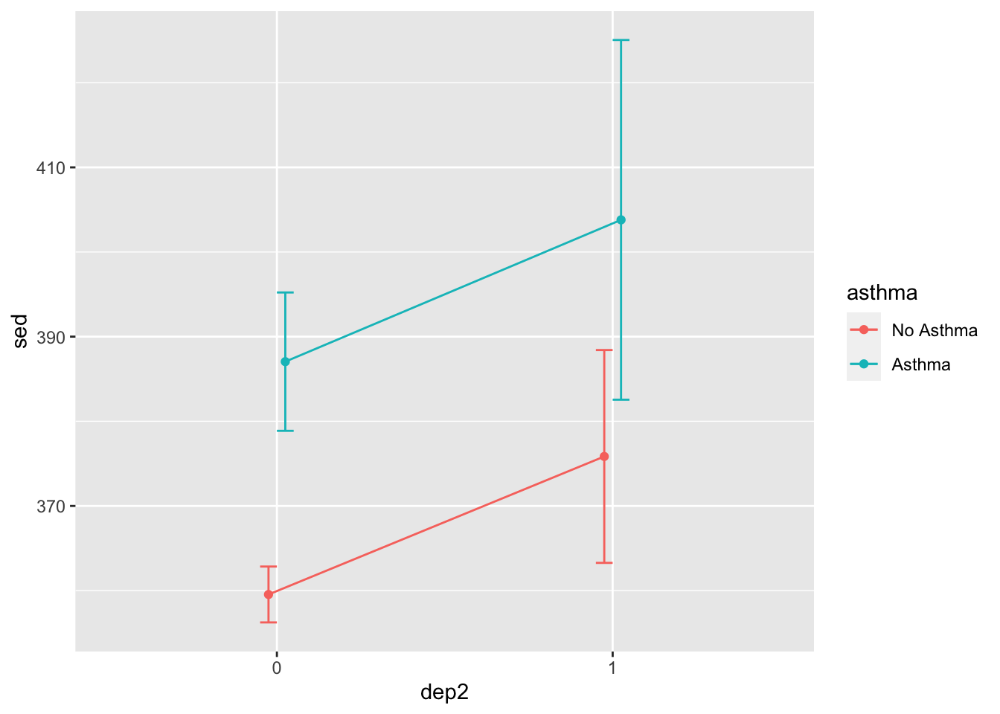
That looks a bit better. From here, let’s go on to color schemes to make the plots a bit better.
Color Schemes
We’ll start by using the scatterplot we made above but we will change the colors a bit using scale_color_manual().
ggplot(df, aes(x = dep, y = sed, group = asthma)) +
geom_jitter(aes(color = asthma), alpha = .5) +
geom_smooth(aes(color = asthma), method = "lm", se=FALSE) +
scale_color_manual(values = c("dodgerblue4", "chartreuse4"))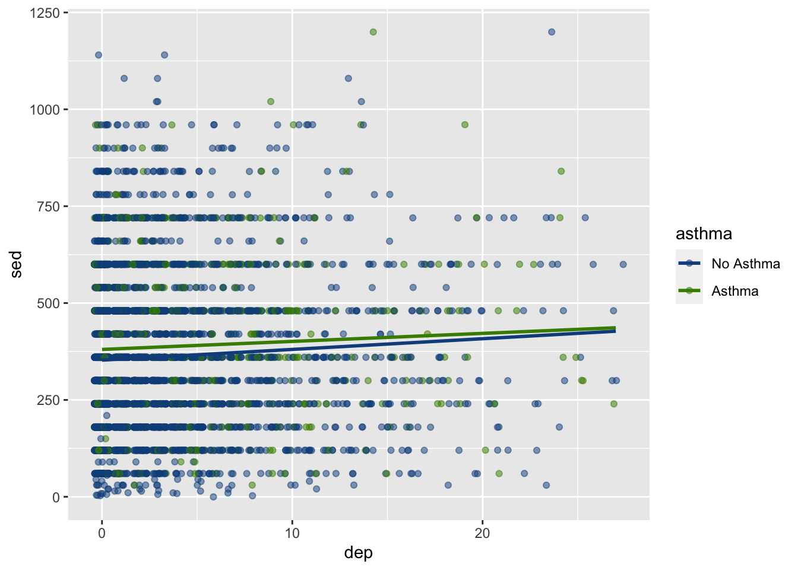 Depending on your personal taste, you can adjust it with any color. On my blog, I’ve posted the colors available in R (there are many).
Advice: Don’t get too lost in selecting colors but it can add a nice touch to any plot. The nuances of plot design can be invigorating but also time consuming to be smart about how long you spend using it.
Next, let’s adjust the bar plot. We will also add some colors here, but we will differentiate between “color” and “fill”.
- Fill fills in the object with color. This is useful for things that are more than simply a line or a dot.
- Color colors the object. This outlines those items that can also be filled and colors lines and dots.
p = position_dodge(width = .9)
ggplot(summed_data, aes(x = dep2, y = sed, group = asthma)) +
geom_bar(aes(fill = asthma, color = asthma),
stat = "identity",
position = p,
alpha = .8) +
geom_errorbar(aes(ymin = sed - s_se, ymax = sed + s_se,
color = asthma),
position = p,
width = .3) +
scale_color_manual(values = c("dodgerblue4", "chartreuse4")) + ## controls the color of the error bars
scale_fill_manual(values = c("aliceblue", "beige"))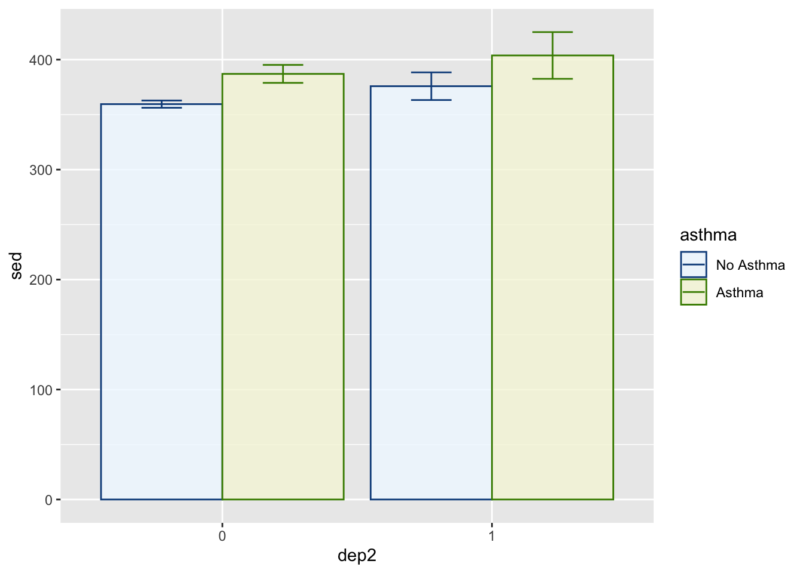
Just so you are aware:
- aliceblue is a lightblue
- beige is a light green
- dodgerblue4 is a dark blue
- chartreuse4 is a dark green
So the fill colors are light and the color colors are dark in this example. You, of course, can do whatever you want color-wise. I’m a fan of this style though so we will keep it for now.
These same functions can be used on the other plots as well. Feel free to give them a try. As for the book, we’ll move on to the next section: Themes.
Themes
Using the plot we just made–the bar plot–we will show how theme options work. There are several built in themes that change many aspects of the plot (e.g., theme_bw(), theme_classic(), theme_minimal()). There are many more if you download the ggthemes package. Fairly simply you can create plots similar to those in newspapers and magazines.
First, we are going to save the plot to simply show the different theming options.
p = position_dodge(width = .9)
p1 = ggplot(summed_data, aes(x = dep2, y = sed, group = asthma)) +
geom_bar(aes(fill = asthma, color = asthma),
stat = "identity",
position = p,
alpha = .8) +
geom_errorbar(aes(ymin = sed - s_se, ymax = sed + s_se,
color = asthma),
position = p,
width = .3) +
scale_color_manual(values = c("dodgerblue4", "chartreuse4")) + ## controls the color of the error bars
scale_fill_manual(values = c("aliceblue", "beige"))Theme Black and White
p1 +
theme_bw()Theme Classic
p1 +
theme_classic()
Theme Minimal
p1 +
theme_minimal()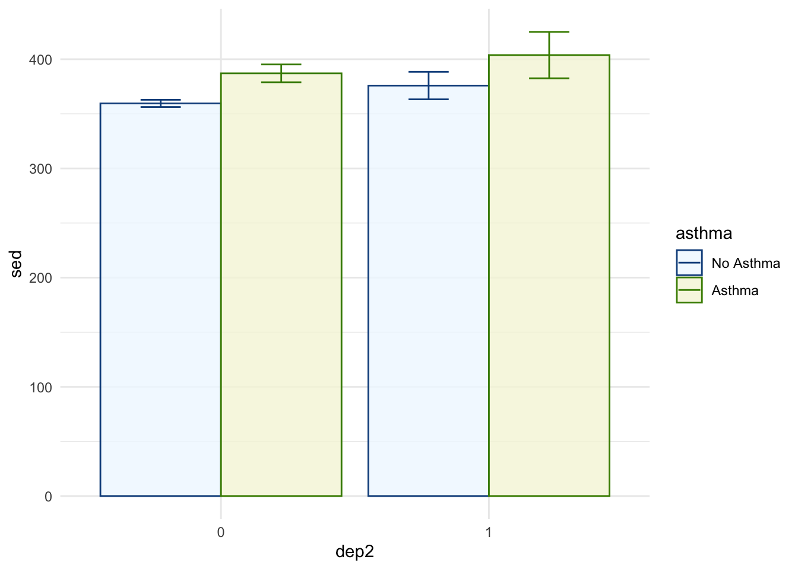
Theme Economist (from ggthemes)
library(ggthemes)
p1 +
theme_economist()
Theme FiveThirtyEight (from ggthemes)
p1 +
theme_fivethirtyeight()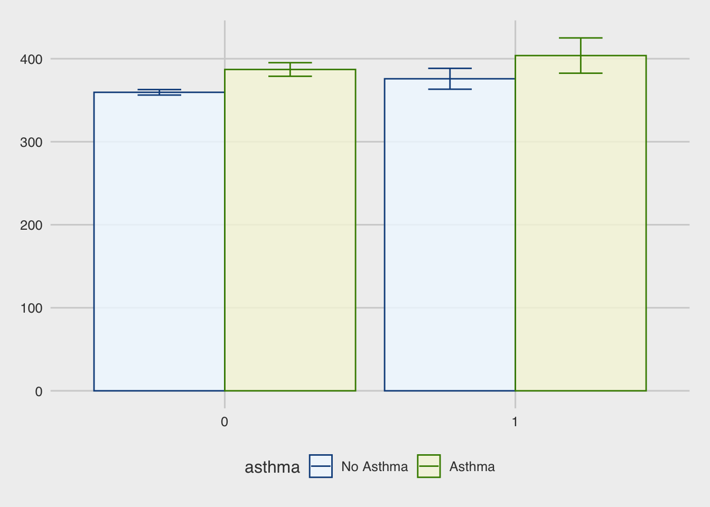
Theme Tufte (from ggthemes)
p1 +
theme_tufte()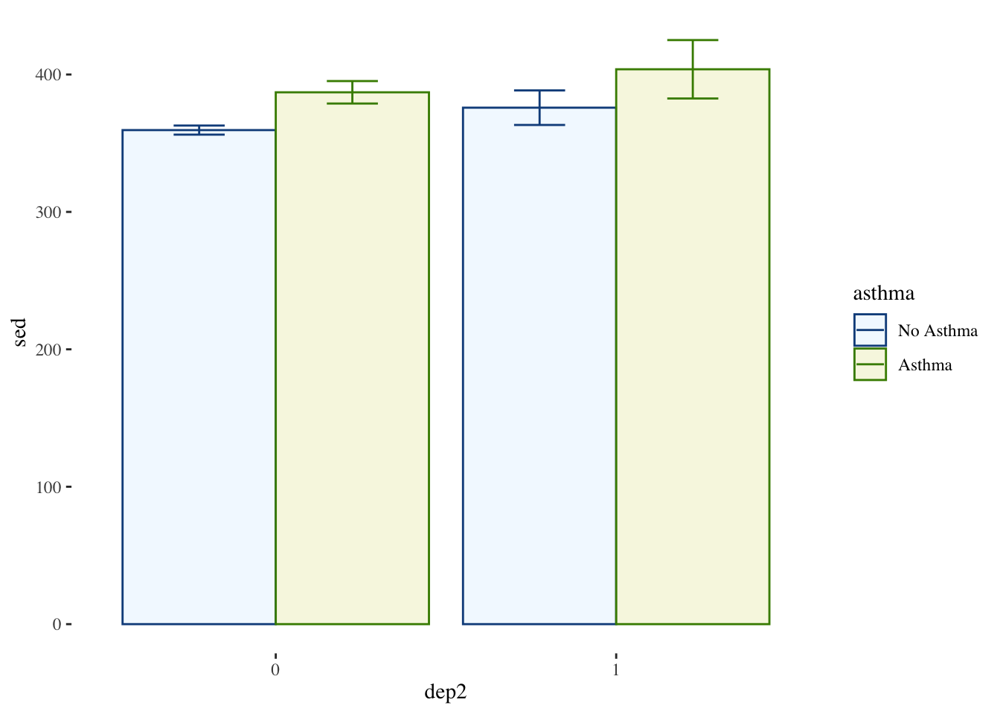
Theme Stata (from ggthemes)
p1 +
theme_stata()
Your Own Theme
There are many more but you get the idea. In addition to the built in themes, you can use the theme() function and make your own adjustments. There are many options so we will just introduce the idea.
p1 +
theme(legend.position = "bottom", ## puts legend at the bottom of figure
legend.background = element_rect(color = "lightgrey"), ## outlines legend
panel.background = element_rect(fill = "grey99", ## fills the plot with a very light grey
color = "grey70"), ## light border around plot
text = element_text(family = "Times")) ## all text in plot is now Times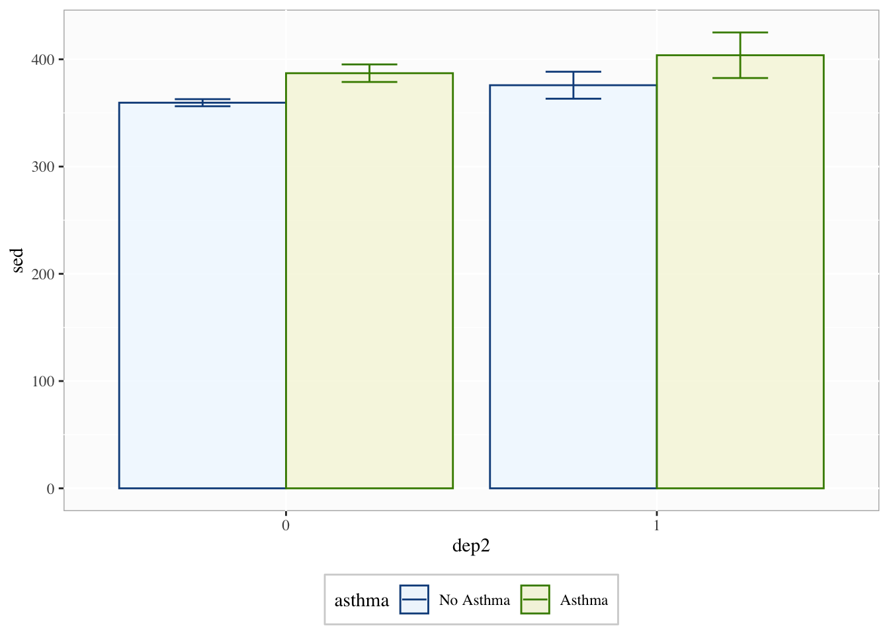
There are many more options but essentially if there is something you want to change, you probably can.
Labels and Titles
Using our last plot, we will also want to add good labels and/or titles.
p1 +
theme(legend.position = "bottom",
legend.background = element_rect(color = "lightgrey"),
panel.background = element_rect(fill = "grey99",
color = "grey70"),
text = element_text(family = "Times")) +
labs(y = "Sedentary Behavior (Minutes)",
x = "Depression (1 = Depressed)",
title = "Comparison of Sedentary Behavior",
subtitle = "across Depression and Asthma")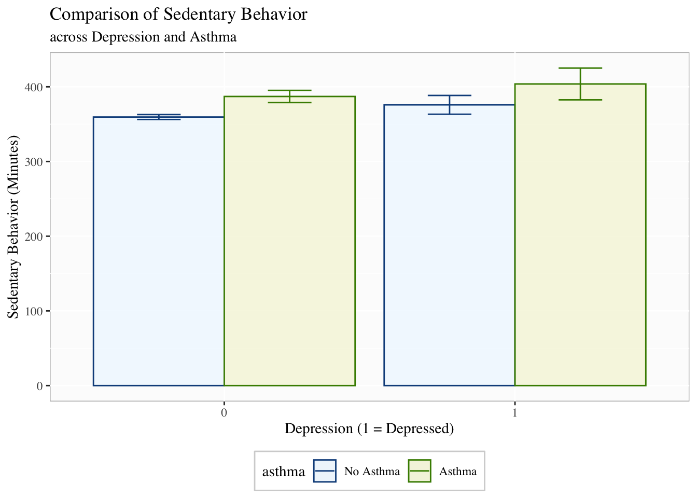
Facetting
Facetting is very useful when trying to compare more than three variables at a time or you cannot use color or shading. It is often useful and beautiful. Facetting splits the data based on some grouping variable (e.g., asthma) to highlight differences in the relationship.
p1 +
theme(legend.position = "bottom",
legend.background = element_rect(color = "lightgrey"),
panel.background = element_rect(fill = "grey99",
color = "grey70"),
text = element_text(family = "Times")) +
labs(y = "Sedentary Behavior (Minutes)",
x = "Depression (1 = Depressed)",
title = "Comparison of Sedentary Behavior",
subtitle = "across Depression and Asthma") +
facet_grid(~asthma)
You can facet by more than one variable and it will create separate panels for each combination of the facetting variables.
Apply It
This link contains a folder complete with an Rstudio project file, an RMarkdown file, and a few data files. Download it and unzip it to do the following steps.
Step 1
Open the Chapter3.Rproj file. This will open up RStudio for you.
Step 2
Once RStudio has started, in the panel on the lower-right, there is a Files tab. Click on that to see the project folder. You should see the data files and the Chapter3.Rmd file. Click on the Chapter3.Rmd file to open it. In this file, import the data, create a descriptive table with table1() and three different types of visualizations (e.g., boxplot, histogram, scatterplot).
Once that code is in the file, click the knit button. This will create an HTML file with the code and output knitted together into one nice document. This can be read into any browser and can be used to show your work in a clean document.
Conclusions
This was a quick demonstration of plotting with ggplot2. There is so much more you can do. However, in the end, exploring and communicating the data through plots is simply something you need to practice. With time, you can a priori picture the types of plots that will highlight things in your data, the ways you can adjust it, and how you need to manipulate your data to make it plot ready. Be patient and have fun trying things. In my experience, almost anytime I think, “Can R do this?”, it can, so try to do cool stuff and you’ll probably find that you can.
It is called “table1” because a nice descriptive table is often found in the first table of many academic papers.↩︎
If you’d like to learn more about data visualization, see Kieran Healy’s Data Visualization: A Practical Introduction at http://socviz.co.↩︎
This is just scratching the surface of what we can change in the plots.↩︎